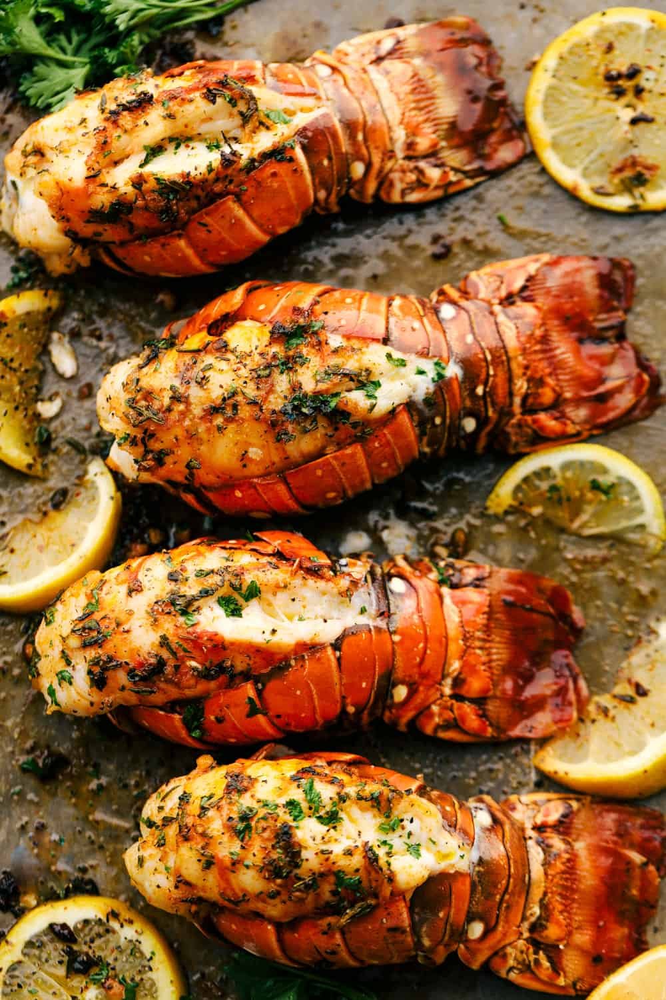

Butter Garlic Herb Broiled Lobster is a decadent dinner that comes together quickly and easily. Impress your sweetheart or family with this beautiful lobster tail recipe. I love how simple it is to prepare and broil. Staying home and enjoying this AMAZING dinner together is just what we want to do this year for Valentine’s Day. It is perfect for us and we still get to enjoy a delicious meal without paying the price and having to wait or make reservations in advance.
Ingredients
- 1 tablespoon sea salt
- 4 (6 ounce) lobster tails
- ½ cup butter, melted
Directions
- Gather Ingredients
- Pour about 1 inch of water into the bottom of a large stockpot and bring to a boil. Add salt and place a steamer insert inside the pot so that it is just above the water level. Place lobster tails on the steamer rack and cover the pot.
- Steam lobster tails for 8 minutes. And don't peek!
- Remove from the steamer and serve with melted butter.
Return to top
Return to main page